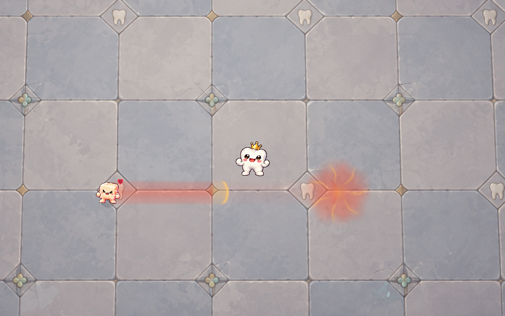

DENTI · IM SPIEL INTEGRIERT
Die Bahn wächst. Dann kommt der Ansturm.
Eine weiche korallrote Lichtspur wächst vom Zuckerstück bis zu Dentis anvisierter Position. Die goldene Spitze erreicht diesen Punkt am Ende der Warnzeit, dann startet der Gegner. Denti weicht in dieser Aufnahme aus: Die angekündigte Richtung bleibt dabei fest.
Fächer, Stoß und Ring beim Grafen ansehen →
Warnung als Standbild

Keine rechteckige Umrandung und kein Zielkreis: Die Einschlagstelle ist eine weiche Glutmarkierung mit gebrochenen Funken. Der weitere Ansturmweg bleibt schwach erkennbar. Die Texturen liegen im vorhandenen Effektatlas; während des Spiels werden keine Bilder neu erzeugt.
Native Godot-Aufnahme mit dem echten Zuckerstück-Angriff: 0,85 Sekunden Warnzeit, anschließend der Ansturm. Schaden, Reichweite und Geschwindigkeit bleiben unverändert. Zielbindung, Startzeitpunkt, Pause, Fortsetzen, Texturen und Überlagerungsdämpfung sind geprüft.
Die neue Charge nutzt freien Platz im bereits erweiterten Atlas: keine weitere Textur und keine zusätzliche Vergrößerung. Die früheren Messungen der gekachelten Rechteckbahnen beschreiben diesen neuen Pfad nicht. Eine Messung der vollen Kampfszene auf Mobilgeräten steht weiterhin aus.